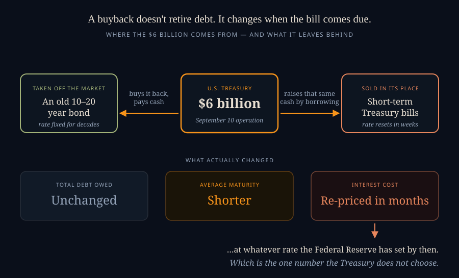
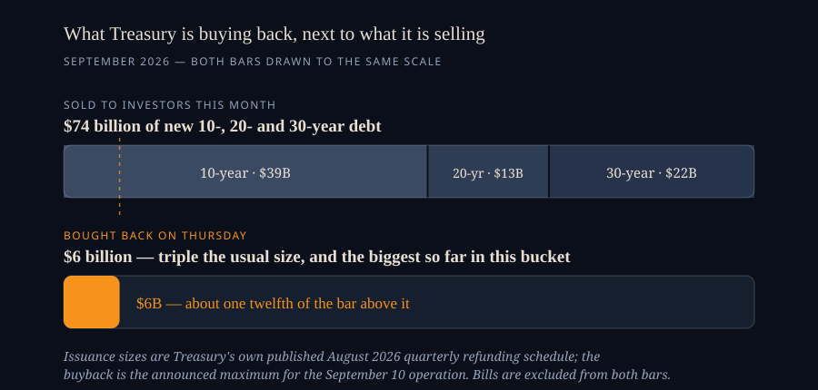

Six Billion Dollars Against Seventy-Four, and Yields Went Up Anyway
SEPTEMBER 10, 2026
On Wednesday the Treasury Department said it would buy back up to $6 billion of its own 10- to 20-year debt the following morning — triple the size of a normal operation, and the biggest it has run in that part of the curve. If you have any instinct at all about how markets work, you know what is supposed to happen next. A big new buyer shows up, demand goes up, prices go up, and because a bond's yield moves opposite to its price, yields go down.
Yields went up. Not dramatically — the 10-year closed at 4.83% against 4.80% the day before, the 20-year at 5.28% against 5.26% — but unmistakably the wrong direction, and the 10-year finished the day at its highest level of 2026. The government announced it was buying and the price of the thing it was buying fell.
I found that genuinely confusing for about an hour, which is usually a sign that I'm holding a wrong idea about how something works rather than watching a market behave irrationally. In this case the wrong idea turned out to be the word "buyback" itself. So this entry is the long version of a short correction: a Treasury buyback is not a repayment. Almost nothing follows from it that you'd expect to follow from paying down a debt, and once you see what it actually is, the market's reaction stops being strange and starts being the obvious response.
What a Buyback Actually Is
When a company buys back its own stock, the shares are gone. Retired. There are fewer of them afterwards, and each remaining one owns a slightly larger slice of the business. That is the mental model most people bring to the phrase, and it is the reason "the Treasury is buying back its bonds" sounds like debt reduction.
It isn't, because the Treasury has no spare money. Every dollar it spends buying an old bond back is a dollar it first has to borrow. And it borrows that dollar by selling something else — in practice, short-term Treasury bills, which is how these operations have been funded since the program began in 2023.
So follow the cash. Treasury sells bills. Bills raise $6 billion. Treasury hands the $6 billion to investors holding older 10- to 20-year bonds and takes those bonds back. At the end of the morning the government owes exactly as much as it did at the start. What changed is when it owes it.

That distinction is the whole story. The old bond had a rate locked in for another decade or two — whatever it was issued at, that's what the government pays until it matures, no matter what happens to interest rates in between. The bills replacing it have to be rolled over roughly four times a year, at whatever rate prevails on each of those mornings.
Swapping the first for the second buys you something real: a little less long-dated paper sitting on the market today, which nudges long-term yields down. It also costs you something real, and the cost is not visible on the day. You have converted a fixed obligation into a floating one. If rates fall, that was clever. If rates rise, you have handed yourself a larger bill and no way to refuse it.
Now the Arithmetic — Which Is Where the Market's Shrug Comes From
$6 billion is an enormous amount of money in every context except the one it was announced into. Here is the number that matters, and it comes from the Treasury's own published auction schedule rather than anyone's estimate.
In September 2026, the Treasury will sell $39 billion of 10-year notes, $13 billion of 20-year bonds, and $22 billion of 30-year bonds. That is $74 billion of brand-new long-dated debt going out the door in a single month, against a one-off $6 billion of old paper coming back in.

Set against the deficit it's ultimately swimming in, it shrinks further. The Congressional Budget Office puts this fiscal year's federal deficit at roughly $2.1 trillion. Spread across the year, that is about $5.75 billion of net new borrowing every single day — weekends included. Thursday's record-setting operation, the biggest of its kind the Treasury has ever run, is roughly one day's worth of the government's own borrowing.
This is why "underwhelmed" is the right word for the market's reaction, and why tripling the number didn't help. Traders were not disappointed that the buyback was $6 billion instead of $8 billion. They were reminded, by the announcement itself, of the scale of the thing the buyback was meant to address. Total federal debt has passed $40 trillion, about 126% of GDP — a figure you can check against every other country on the Ledger's own debt & GDP board. A $6 billion operation against that is a teaspoon, and announcing that you have tripled the size of your teaspoon mostly draws attention to the bathtub.
We have seen this play out once already, at a scale large enough to measure. On August 19, when Secretary Bessent first announced he would at least double these operations, the 30-year yield fell 9 basis points in a day — 5.28% to 5.19%. A real move, and exactly the intended one. By September 1 it was back at 5.27%. The entire effect was gone in nine trading days, and nothing dramatic had to happen to erase it. The tide simply kept coming in.
Are the Fed and the Treasury Fighting Each Other?
Not in the sense of a public quarrel. Bessent has called the Fed's independence on monetary policy a "jewel box" not to be tampered with, and has said plainly that the newly installed chair, Kevin Warsh, is under no pressure from him to cut rates. Take that at face value; there is no reason not to.
But look at what the two institutions are actually doing, because that is a different question, and the answer there is that they are pulling in opposite directions on the same rope.
The Fed has held its policy rate at 3.50–3.75% for five straight meetings. At the July meeting three members dissented — not because they wanted cuts, but because they wanted a hike. Inflation has now run above the 2% target for more than five years, an energy shock is working through prices, and going into the September 15–16 meeting the market puts the odds of an increase at somewhere around six in ten. Meanwhile the Treasury is spending real money trying to push long-term rates down, and the White House, the Vice President and the Treasury Secretary have all publicly urged the Fed not to raise.
So one arm of the government is leaning toward tightening at the short end to control inflation, while the other is intervening to loosen conditions at the long end. That alone would be awkward. What makes it genuinely fraught is the funding mechanism from the diagram above.
Every buyback shifts a slice of the national debt out of long fixed-rate bonds and into short-term bills. Bills re-price constantly, and what they re-price to is essentially whatever the Fed's policy rate is. The more of the debt sits in bills, the more directly and immediately a Fed rate hike raises the federal government's own interest bill. Which means that a Treasury pursuing this strategy is, whatever its intentions, steadily increasing the fiscal cost of the Fed doing its job.
Economists have a name for the end state of that dynamic — fiscal dominance, the point at which a central bank's decisions are constrained less by inflation than by what the government can afford to pay on its debt. Nobody sensible is claiming the United States is there. But it is fair to say the buyback program moves a small distance in that direction, and analysts have said so out loud: shortening the debt's maturity makes interest payments more sensitive to Fed policy and could be read as adding pressure on the Fed to keep rates low.
There is one more layer of irony. Buying long bonds and selling short ones to flatten the yield curve is not a new idea — it is Operation Twist, which the Fed ran in 2011. The difference is scale: the Fed's version moved more than $600 billion. And the current Fed chair is on record preferring that rates be set by the market and wanting to shorten the Fed's own balance sheet, not expand it. So the Treasury has picked up a tool the central bank put down, and is using it at about one percent of the size, in a market that has grown considerably since.
What This Means If You Own Anything
The general lesson is worth stating on its own, because it survives whatever happens on Thursday or at next week's Fed meeting: the long end of the yield curve has stopped being a monetary variable and started being a fiscal one.
Short-term rates are set by the Fed, more or less by decree. Long-term rates are set by whether a large number of people around the world are willing to lend the United States money for twenty years at the offered price — a judgment about deficits, inflation and how much long-dated paper is going to keep arriving. That judgment is not something the Treasury can buy its way out of $6 billion at a time, and the last three weeks are the evidence.
Nor is the government the only borrower in the queue. Corporate issuance tied to AI buildouts has run past $1.5 trillion, which is a genuinely enormous amount of new paper competing for the same pool of savings. When people say yields are high because of supply, this is a large part of what they mean, and no Treasury operation touches it at all.
For Bitcoin holders
The honest version first: Bitcoin is not up because of this, and I have no way to show that it is. It sits at about $77,300 on the afternoon of September 10, which is 39% below the all-time high it set last October and down 12% since the start of the year. It is also up around 20% since the day before Bessent's first buyback announcement. Three weeks is not evidence of anything, that window contains a dozen other things, and I'd be doing exactly what I complain about in other people if I drew a line between those two facts and called it a mechanism.
What is worth noticing is structural rather than directional. The entire story above is a story about discretion — a Treasury choosing to change the maturity of its liabilities, a Fed choosing a policy rate, an administration choosing to lean on both. Every number in it is a decision somebody made and can unmake. Bitcoin's own supply schedule is the one number in this neighbourhood that nobody gets to vote on, which is the entire argument for it and also the reason it can be stated exactly rather than estimated. Watching a $40 trillion debt get shuffled between maturities to buy a nine-basis-point move that lasted eight days is a reasonable moment to appreciate the contrast — but it is an argument about the property, not a forecast about the price, and those two things get conflated constantly.
One concrete thing does follow, though, and it cuts the other way. If long rates stay at two-decade highs, a Treasury bill paying around 4% with no volatility is real competition for money that might otherwise buy a non-yielding asset. High long rates are not obviously bullish for Bitcoin in the short run, whatever they imply about fiat over decades.
For MSTR shareholders
This is where an apparently distant story about bond-market plumbing lands directly on a balance sheet, and it's the part I'd have missed if I hadn't gone looking.
Strategy holds 845,050 BTC against roughly $8.2 billion of debt and $15.5 billion of preferred stock — together about 36% of its Bitcoin NAV standing ahead of the common shareholder, which is the whole reason the CEBE board exists. That preferred carries a blended dividend rate around 11.2%, which works out to roughly $1.73 billion a year in obligations. Operating cash flow is negative. The dividends are not paid out of the business; they are paid, ultimately, out of the company's ability to keep issuing securities.
And what does it cost Strategy to issue a security? That depends on what a yield-hungry investor's alternatives look like. When the 20-year Treasury pays 5.28% — a two-decade high, risk-free, no Bitcoin exposure, no mNAV, no counterparty puzzle — the gap that a preferred has to clear to be worth buying gets a lot narrower, and the rate it has to offer to clear it gets higher. The long end of the Treasury curve is, in a very direct way, the floor under Strategy's cost of capital.
So a shareholder watching MSTR trade at $129.26 — an mNAV of 0.77, meaning the market prices the company at 23% less than the Bitcoin it holds — has more riding on Thursday's buyback than the headline suggests. Not because $6 billion moves anything, but because the failure of $6 billion to move anything is information about how long the 20-year stays where it is. That, not the Bitcoin price alone, is what sets the terms on the next raise.
For anyone with a mortgage, or wanting one
Here is the most useful correction in this entry, and the one I hear people get wrong most often: the Fed does not set your mortgage rate. A 30-year mortgage is priced off the 10-year Treasury yield plus a spread, because that is roughly how long the average mortgage actually lives before the house is sold or the loan refinanced. The Fed's policy rate governs credit cards, car loans and home equity lines. It reaches your mortgage only indirectly, through what the bond market believes about inflation over the next decade.
Which means the Fed could cut next week and mortgage rates could rise anyway — that has happened before, and it happens precisely when a cut makes bond investors more worried about long-run inflation, not less.
The current arithmetic: the 10-year sits at 4.83%, the 30-year fixed mortgage averaged 6.76% this week, and the gap between them is about 1.93 percentage points. That spread is wide by the standards of the 2010s, when it often ran near 1.5 points, though well down from the 3-plus points it hit in 2022–23. So there are two separate routes to a cheaper mortgage: the 10-year falls, or the spread narrows. Thursday's operation was an attempt at the first one, and the housing market can judge how it went as well as anyone.
The backdrop is a market already showing the strain. Mortgage rates are up from 6.71% a week ago and 6.35% a year ago. The median existing-home price hit an all-time high of $440,600 in July, while sales fell 4.2% over the first half of the year — the familiar standoff where prices hold up because nobody with a 3% mortgage will sell, and volume dries up because nobody else can afford to buy. Nothing in the buyback program changes that, and it isn't designed to.
What I'll Be Watching
Three things, in order of how much they'd actually tell us.
The first is next Wednesday. If the Fed raises on September 16 with the 20-year already at 5.28% and the Treasury visibly working the other side of the curve, we will learn something real about how independent this Fed intends to be under pressure — and, separately, about how expensive its independence is now that more of the debt sits in bills.
The second is whether the long end holds these levels through the buyback window, which runs to November 4. The August experiment already gave us one clean answer: a 9 basis point move, erased in nine trading days. If the tripled operations produce the same shape at a bigger size, that's a second data point saying the same thing, and at that point it isn't a fluke.
The third is the thing nobody announces. Buybacks are funded by bills, so the honest measure of this policy isn't the buyback headline at all — it's the share of the national debt sitting in short-term paper, quietly climbing, one operation at a time. That number is where the real decision is being made, and it is not the one that gets a press release.
None of which is a prediction. It is mostly an argument that the interesting question was never "is $6 billion enough." A buyback moves debt from one shelf to another; it does not reduce it, and it cannot answer the question the bond market is actually asking, which is whether the United States intends to borrow $2 trillion a year indefinitely. Thursday's yields were the market declining to change the subject.